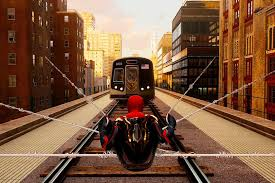
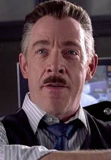
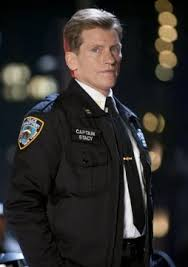

Peter Parker ✔
Fotograf · Student · Held
Avengers · Queens, New York
Sein Name ist Peter Benjamin Parker. Er ist 37 Jahre alt. Er ist ein Waisenkind wegen des Todes seiner Eltern, aber seit er 4 Jahre alt ist, lebt er bei seinen Onkeln May und Benjamin. Er wohnt in Queens, New York. Er spricht Englisch. Er fotografiert gern und studiert gern. Er ist ein Wissenschaftsmann. Er liebt es, anderen zu helfen. Er arbeitet bei den Avengers, aber wir glauben, dass er einen geheimen Beruf haben kann. Er trägt einen rot-blauen Anzug und hat eine sportliche Figur. Er wirkt schnell und geheimnisvoll.
Fotograf · Daily Bugle · New York
Sein Name ist Peter Benjamin Parker und er ist 34 Jahre alt. Er kommt aus New York und lebt auch dort. Er ist single und spricht nur Englisch. Seine Hobbys sind Physik, Chemie und Mathematik lernen, Skateboarden, Pizza essen und Basketball spielen. Er ist Fotograf für den Daily Bugle und Universitätsstudent. Peter Parker ist ein sehr intelligenter, freundlicher und hilfsbereiter Mensch — er hilft immer allen. Er hat mehrere übermenschliche Fähigkeiten, wie zum Beispiel übermenschliche Stärke, Geschwindigkeit, Beweglichkeit und einen Spinnensinn. Er ist ein sehr guter Kämpfer und Schüler und war immer der Klügste.
Student · Daily Bugle · Manhattan, New York
Er ist Spider-Man! Er ist 17 Jahre alt, ein Waisenkind und ledig. Seine Eltern waren Mary und Richard Parker, sein Onkel war Ben Parker und seine Tante war May Parker. Er wohnt in Manhattan, New York. Wir sehen ihn Englisch und Spanisch sprechen. Seine Hobbys sind Dinge bauen, Filme sehen und mit Legos spielen. Er streitet mit Helden und Kriminellen gern und sieht nicht gern, wenn Leute sterben. Er ist Student und arbeitet beim „Daily Bugle". Er ist 173 cm groß — klein, aber muskulös, flexibel und agil. Sein Kostüm ist rot, schwarz, blau und weiß mit einer Spinne im Zentrum. Er ist sarkastisch, intelligent, freundlich und ungeschickt.
Heute, 08:30 Uhr
Guten Morgen! Heute ist ein schöner Tag in New York. 🌞 Ich gehe zur Schule. Die Physikstunde ist sehr interessant!

Gestern, 18:45 Uhr
Meine Tante May kocht sehr gut. Das Essen ist lecker! 🍝 Ich helfe ihr in der Küche. Wir sind eine kleine, aber glückliche Familie.
Heute, 09:15 Uhr · New York
Spider-Man ist sehr mutig! Er hilft den Menschen. Gestern hat er meine Tasche gerettet. Danke, Spider-Man! 🕷️❤️
Heute, 11:00 Uhr
Spider-Man fliegt durch die Stadt. 🏙️ Er schwingt an Gebäuden. Das ist fantastisch! Ich sehe ihn jeden Tag.
Gestern, 14:30 Uhr
Er hilft den Menschen. Er ist stark und schnell. 💪 New York ist sicher mit Spider-Man. Ich bin froh!
Heute, 07:00 Uhr
Spider-Man rettet einen Zug! 🚇
Heute Morgen ist ein Zug in Manhattan ohne Bremsen gefahren. Spider-Man hat den Zug gestoppt. Die Menschen sind gerettet. Er ist ein Held!

Gestern, 20:10 Uhr
Ein neuer Bösewicht erscheint! 🦹
Ein gefährlicher Bösewicht ist in Queens. Er ist groß und stark. Die Polizei braucht Hilfe. Spider-Man ist unterwegs!

Montag, 12:00 Uhr
Spider-Man hilft einer alten Frau 👵
Spider-Man hilft einer alten Frau in der Straße. Er trägt ihre Tasche. Die Frau ist glücklich. Er ist sehr freundlich!
Bericht #2024-001
⚠️ Bericht: Der Doktor Octopus ist in Manhattan. Er hat acht Arme. Er ist sehr gefährlich. Spider-Man kämpft gegen ihn. Die Straßen sind gesperrt.

Bericht #2024-002
✅ Positiv: Spider-Man hat den Grünen Goblin gestoppt. Keine Verletzten. Die Bevölkerung ist sicher. Wir danken Spider-Man für seine Hilfe.
Bericht #2024-003
📋 Bericht: Sandman erscheint in Brooklyn. Er ist aus Sand. Er ist sehr groß. Spider-Man kommt sofort. Er ist mutig und schnell!
Beste Freundin
MJ ist Peters beste Freundin. Sie ist intelligent, mutig und unterstützt ihn immer.
Freund
Harry ist ein loyaler Freund von Peter und begleitet ihn durch viele Abenteuer.
Familie
Tante May kümmert sich um Peter und lehrt ihn Verantwortung und Respekt.
Daily Bugle
Der Herausgeber des Daily Bugle. Er kritisiert Spider-Man häufig und sorgt für Kontroversen.
Universität · New York
Um 6 Uhr wacht er auf. Er schaut eine Weile auf sein Handy, dann frühstückt er und zieht sich an. Danach geht er zur Universität. Von 7 bis 9 Uhr hat er Unterricht, aber manchmal muss er losgehen und Menschen helfen. Später macht er einen Spaziergang durch New York. Am Mittag geht er zum Grab von Gwen und isst in seinem Lieblingsrestaurant. Dann spielt er mit seinem Freund Flash Basketball. Von 14 bis 17 Uhr kommt er an die Universität zurück. Am Ende macht er einen weiteren Spaziergang durch die Stadt und geht nach Hause. Er macht seine Hausaufgaben, trinkt einen Kaffee und geht schlafen.
Job · New York
Er wacht um 5 Uhr auf. Danach bleibt er im Bett liegen. Dann duscht er sich mit kaltem Wasser. Um 7 Uhr frühstückt er zwei Eier und trinkt Kaffee ohne Zucker. Später geht er zu seinem Job, obwohl er immer eine Schokolade im Supermarkt kauft. Manchmal muss er seinen Job verlassen, um den Leuten helfen zu können. Am Mittag isst er mit seiner Frau Mary Jane. Um 22 Uhr geht er ins Fitnessstudio und läuft danach nach Hause. In der Nacht sieht er allein fern, während er ein Bier trinkt. Um 22 Uhr schreibt er in sein Tagebuch und legt sich ins Bett.
Welt-199999 / Welt-616 · New York
Er wacht gegen 8 Uhr auf. Vor dem Frühstück macht er Sport. Dann frühstückt er — vielleicht Eier und Speck. Nach dem Frühstück duscht er sich und zieht sich an. Danach fährt er zur Universität, vielleicht mit der Bahn, dem Bus oder mit seinem Spinnennetz. Er studiert von 10 bis 14 Uhr und isst danach ein Sandwich zu Mittag. Später arbeitet er beim „Daily Bugle" als Fotograf und macht Spaziergänge durch die Stadt, um Fotos zu machen. Am Abend patrouilliert er die Straßen. Er geht erst um 4 oder 5 Uhr morgens ins Bett, schläft nur 3 bis 4 Stunden — und der Tag beginnt von vorne.
Spider-Man – Zusammenfassung
Peter Parker ist ein gewöhnlicher Schüler aus Queens, New York. Nach dem Biss einer genetisch veränderten Spinne erhält er besondere Kräfte.
Er entwickelt seine Identität als Spider-Man und nutzt seine Fähigkeiten, um die Menschen von New York zu beschützen.
Während des Films lernt Peter, dass große Macht auch große Verantwortung bedeutet. Trotz vieler Schwierigkeiten entscheidet er sich immer, das Richtige zu tun.
Spider-Man: No Way Home – Detaillierte Zusammenfassung
Es beginnt, als alle Leute die Identität von Spider-Man entdeckt haben. Das hat ihm und seiner Familie viele Probleme bereitet. Deshalb hat er einen Anwalt, Matt Murdock, engagiert.
Peter hat keine rechtlichen Probleme mehr, aber er und seine Freunde haben Probleme, an die Universität zu kommen. Deshalb hat Peter mit Doctor Strange gesprochen. Er hat ihn gebeten, einen Zauber zu machen, damit alle vergessen, dass er Spider-Man ist. Der Zauber ist jedoch misslungen und hat Menschen aus verschiedenen Universen in seine Welt gebracht.
Peter hat das zuerst nicht gewusst. Dann ist er zum Dekan der Universität gegangen und hat mit ihm gesprochen. Danach hat Doctor Octopus Peter angegriffen und ihm die Maske abgenommen, aber er hat nicht erkannt, dass er Spider-Man ist.
Später hat auch der Grüne Kobold Peter angegriffen. Danach hat Doctor Strange Peter gebeten, die Bösewichte zu finden und sie in ihr Universum zurückzubringen. Peter hat ihnen helfen wollen und versucht, sie zu heilen. Das hat aber nicht funktioniert, weil der Grüne Kobold Tante May getötet hat.
In der Nacht hat Peter die anderen Spider-Men getroffen. Zusammen haben sie gegen die Schurken gekämpft und schließlich gewonnen. Am Ende hat Peter sich von seinen Freunden verabschiedet und Doctor Strange hat einen neuen Zauber gemacht. Danach haben alle Menschen Peter Parker vergessen.
Heute
Wir finden, dass Spider-Man ein sehr interessanter Film ist. Die Geschichte ist spannend und leicht zu verstehen.
Besonders gefallen uns die Action-Szenen und die Entwicklung von Peter Parker. Die Botschaft über Verantwortung macht den Film noch bedeutender.
Insgesamt empfehlen wir den Film, weil er Action, Humor und Emotionen perfekt kombiniert.
Spider-Man: No Way Home
Wir möchten heute über den Film „Spider-Man: No Way Home" sprechen. Wir finden es gut, dass der Film die drei Spider-Man aus dem Multiversum eingeschlossen hat. Wir denken auch, dass die Geschichte sehr interessant war, aber wir mochten nicht, dass Tante May gestorben ist. Wir sind froh, dass die Spider-Man sich kennenlernen konnten, obwohl wir glauben, dass Peter es nicht verdient hat, vergessen zu werden. Wir wissen, dass es wichtig war, dem Ganzen Dramatik zu verleihen, aber es war zu traurig. Wir meinen, es war ein sehr guter Film. Allerdings empfehlen wir, die vorherigen Filme zuerst zu sehen.
Spider-Man: No Way Home
Uns hat gefallen, dass Tobey Maguire, Andrew Garfield und Tom Holland erschienen. Der innere Konflikt von Peter war interessant und hat uns gefallen. Mir gefällt, dass Daredevil (Matt Murdock) Peter geholfen hat. Der Beziehung zwischen Peter und Dr. Strange war ein bisschen traurig, und das Ende, als Peters Freunde ihn vergessen haben, war tragisch — aber er war treu zum Spider-Man-Charakter. Es war sehr emotional, als jeder Spider-Man auf seine eigenen Filme Bezug genommen hat, vor allem als Andrew MJ gerettet hat. Ich finde, dass einige Interaktionen zwischen den drei Spider-Man peinlich waren, aber das ist nicht unbedingt schlecht. Ich bin der Meinung, dass es sehr angenehm ist, den Film zu sehen.
Teste dein Wissen!
5 Fragen über Spider-Man und SpiderBook. Wie viel weißt du?